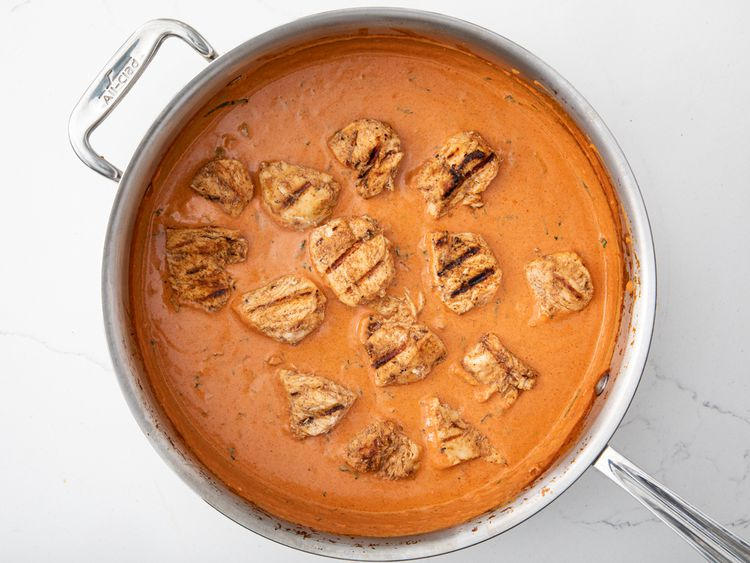

Chicken Tikka

Description
Chicken Tikka is a popular Indian dish made by marinating bite-sized pieces of chicken in a spiced yogurt mixture and then grilling or baking them to perfection. The marinade typically includes spices like cumin, coriander, turmeric, and garam masala, along with lemon juice and fresh ginger-garlic paste. The result is a smoky, flavorful dish with a slightly charred exterior and a tender, juicy interior. Chicken Tikka can be served as an appetizer, a side dish, or the base for Chicken Tikka Masala when cooked in a creamy tomato sauce.
Ingredients
The ingredients are as follows:
- Chicken breast or thigh pieces
- Yogurt
- Lemon juice
- Ginger-garlic paste
- Cumin powder
- Coriander powder
- Turmeric powder
- Garam masala
- Red chili powder
- Salt
- Vegetable oil
Steps
The steps are as follows:
- Cut the chicken into bite-sized pieces and set aside.
- In a bowl, mix yogurt, lemon juice, and all the spices to create a marinade.
- Add the chicken to the marinade and coat well. Cover and refrigerate for at least 2 hours or overnight.
- Preheat a grill or oven to 400°F (200°C).
- Skewer the marinated chicken pieces or place them on a baking tray.
- Grill or bake the chicken for 20-25 minutes, turning halfway through, until fully cooked and slightly charred.
- Serve hot with mint chutney and lemon wedges.